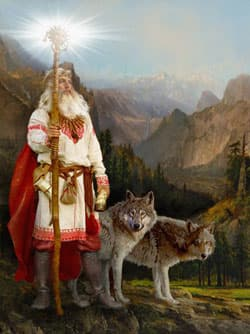
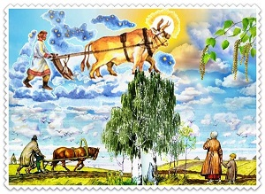
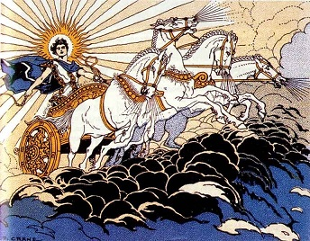
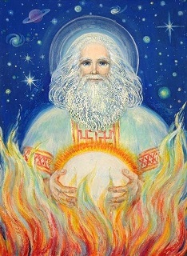

Боги Сонця у слов'ян: Дажбог, Ярило, Хорс
__________________________________________________________________________
Існування у слов'ян божеств й культів, пов'язаних з Сонцем не викликає сумнівів.
Без тепла і світла, яке дарує Сонце не може існувати життя. З Сонцем вставали, до Сонця молилися, Сонце прославяли.
Шанування небесного світила знайшло відображення в стародавніх міфах, переказах, легендах, казках, молитвах і символах наших предків.
Без сонячного світла і енергії не можна було виростити хороший урожай.
А в залежності від його положення, змінювались пори року. Не дивно, що у слов'ян культ Сонця мав центральне значення
Виявляється, що він був у них не один - їх було 4. Чотири проявлення, кожне з яких відповідає Сонцю у певну пору року:
- зима - Хорс;
- весна - Ярило;
- літо - Дажбог;
- осінь - Сварог.
Хорс

Хорсом називали зимове, так-зване "вовче Сонце", котре також могло асоціюватися і з Місяцем - Чорним Сонцем та його люнарним культом.
Вперше в писемних джерелах Хорс згадується літописцем Нестором, у "Повісті минулих літ":
Віра у дане божество, на думку дослідників, виникла ще у скіфо-сарматський період і має індо-іранську етимологію.
Так, на санскриті "хара" - позначає вогонь, авестійський khvar (ореол) і давньоперський khurset - перекладаються як "сяюче сонце", а khoršid, khurśet, khores - просто Сонце.
За даними деяких дослідників, Хорс зображався з мечем та був покровителів юнаків та воїнів. Символізував стриманість та початок перших холодів.
Деревом Хорса вважали - клен. Хорс охолоджував пристрасть та підсилював холоднокровність, витривалість, відданість справі, ідеалам і життєвим принципам
Назва Хорс дійшла до наших днів й збереглась в численних топонімах, наприклад "Хорсево болото" на Волині, або місто "Хорс" у Болгарії. Є чимало людей з прізвищем "Хорс".
Ярило
Немає абсолютно жодного сумніву, що Ярило у слов'ян втілював пробудження Природи, чоловічу Яру силу, прихід весни та був дуже шанованим у хліборобів, які вважали його своїм покровителем. Нестримний весняний Ярило - повна протилежність зимовому Хорсу.

Ярило - це бог буйного весняного сонця, наповненого пристрастю, під його променями все швидко набирає силу, сходить насіння, народжується потомство. Ярило вшановується як бог родючості, напротивагу Рожаницям - жіночим богиням плодородності.
Ярилу поклонялися молоді неодружені хлопці і дівчата, адже він дарував яскраву любов, приносив перше кохання.
Таким чином його однаково вшановували і любили - і молоді, і старі, і хлопці, і дівчата, хлібороби і витязі.
Ярило зображувався у вигляді юнака, стрункого і красивого, енергійного і веселого. У нього було пшеничного кольору волосся, небесного кольору очі.
Ярило носив червоний плащ, а також у нього був свій вогненний кінь. Цей бог був покликаний звільнити землю від зимових холодів за допомогою особливих вогненних стріл.
Ярило символізував молодість, чистоту, щирість
Дажбог

На зміну Ярилу приходить зрілий, літній Дажбог, який зображався вершником або на колісниці, у золотих обладунках, з вогненним щитом.
Сонячне сяйво, яке бачить людина на землі, це не що інше, як відблиск від щита Дажбога. Бог мав довге світло-русяве волосся, пронизливий погляд.
Час Дажбога - розгар літа (сонцепік). Він уявлявся величним, благородним, всеправедним, поважним - підсилював усі ці риси.
Етимологія теоніма Дажбог, на перший погляд, цілком очевидна. На думку лінгвіста М. Фасмера, це ім'я з давньоруського тлумачиться як дажь «дай» і * bog' «щастя, добробут». Все разом - «Той, що дає добробут».
Так, як слов'яни були сонцепоклонниками, Дажбог для них був найвищим з усіх богів, можна сказати універсальним богом, не тільки богом Сонця.
До нього зверталися про допомогу у будь-яку годину чи пору року. Його прославляли, до нього молилися, зображали Дажбога на різних культових та побутових предметах. Дажбог згадується третім богом у Київькому давньоруському пантеоні.
Дослідник Борис Рибаков вважав, що культ Дажбога, як «Сонце-царя» походить від скіфського культу Колаксая, сина Таргітая, прабатька царських скіфів, трактуючи ім'я Колаксая через слов'янський корінь коло («сонце») і іранський ксай («владика, цар »).Таким чином, Дажбог поєднував в собі усі основні функції: в природі він був подателем світла, тепла і родючості, а в суспільстві - джерелом князівської, царської, родової влади.
Також Рибаков поєднував слов'янського Дажбога із ще одним скіфо-сарматським, а також еллінським богом - Гойтосиром (Аполон), який складався з двох коренів "гоїти" - живити та "сура" - сонце.
В "Слові о полку Ігоревім" зберігся цікавий вираз "Дажбогови внуци". Він відображає усю тогочасну суть вірувань слов'ях та глибину стосунків з Богом. Прості люди прирівнювалися не рабами, а внуками самого Бога! Ніякого страху чи негативу у слов'ян перед Богом не було. А навпаки - Розум та Впевненість.
Сама назва "Дажбог" дійшла до наших днів в українському фольклорі, наприклад в колядках "Ой Дажбоже", а також казках і легендах.
Сварог

Сварог є найменш вивченим давньослов'янським божеством. Про нього збереглось найменше писемних згадок, хоча в народній етимології і мистецтві закріпилися символ та жіноче ім'я - Сварга.
Сварог зображався глибоко мудрим, спокійним, поважним дідом, який сотворив Всесвіт. Сварогом у давньослов'янській міфології називали Космос.
Наші предки вважали, що Сварог - небесний коваль, який скував зорі. Останні уособлювали далеких предків.
Етимологи виводять назву "Сварог" з санскриту, де "sva" - небо, небесний, а "рай", "раг", "рад" - світило, світло.
У слов'янській міфології Сварог представлений в образі коваля. Під час війни його зображують воїном з мечем в руках.
Сонце, яке уособлює Сварог - старе, дуже віддалене, яке фізично важко відчути, воно майже не гріє землю, є попередником зимового Хорса"
У деяких джерелах представлені також й інші боги сонця:
- Рарог - сонячний сокіл, проявлення Дажбога;
- Купайло - бог літнього сонцестояння;
- Коляда - бог зимового сонцестояння;
- Свентовид - бог осіннього рівнодення: